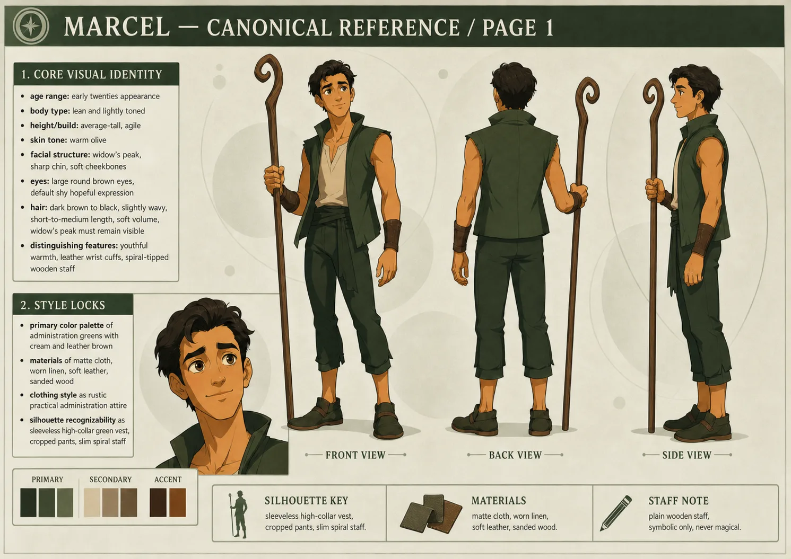
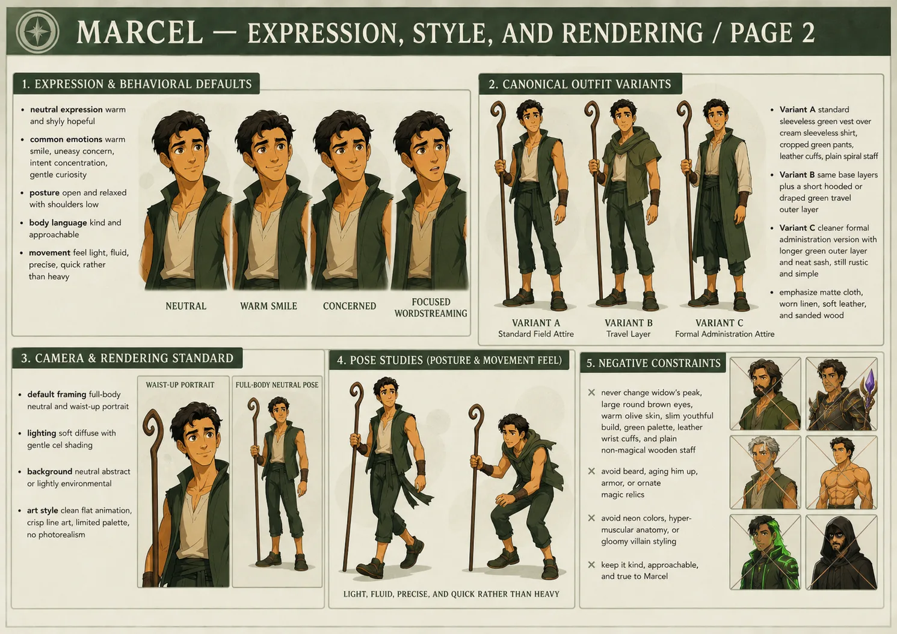

Marcel
- Stable ID
marcel- Structural type
- character-section
- Canon status
- unknown
- Spoiler level
- major
Published source content
Core identity
Marcel appears to be an olive-skinned man in his early twenties, with a pronounced widow’s peak, sharp chin, and large round brown eyes often marked by shy hope. He is curious, appreciative, jovial and warm. He sees beauty quickly and danger slowly.
“Marcel is not innocent because he has done no harm; he is innocent because the memory of harm has been taken from him.”
Memory architecture
His memories have been edited repeatedly. Entire centuries of lived experience are inaccessible to him, including war service, friendships, praise, violence and the historical order that existed before his current life. What remains is not fake; it is incomplete.
- He does not know his meaningful historical age.
- He remembers the Administration as if life has always been roughly this way.
- His body and habits retain echoes his conscious history cannot explain.
- His present faith is sincere, but formed inside a controlled memory field.
Wordstreaming
Wordstreaming is executable force through an ancient dead language associated with WordStreamer. Marcel’s known specialty is gravity, but his actual historical proficiency is far larger than he remembers.
- Learned wordstreaming from WordStreamer herself before Tiger murdered her.
- During the Blood Eclipse War he was a devastating battlefield wordstreamer.
- Was praised for centuries and could take down entire Drakken with words alone.
- In raw battlefield impact, the supplied dossier describes him as outperforming even Codec’s macro talent.
- The Administration treats wordstreaming as taboo while valuing Marcel for it, a contradiction he notices but cannot fully indict without his missing history.
The weapon was never the staff. The weapon was his voice.
War and erased magnitude
Marcel participated in the Blood Eclipse War. He does not remember the Drakken, the Blood Rings, the worlds destroyed, or the sound of his own voice when terraforming titans fell beneath it. The edits did not merely remove trauma; they removed evidence of his magnitude.
Thirty-one days after the war, Marcel is present with Codec at the First Dirt reclamation attempt on Nacreous VI when Tiger shuts the project down and declares the war’s conclusions structural. The incident places Marcel inside the postwar settlement he will later learn to trust without remembering how it was imposed.
Visual identity lock
- Olive skin; apparent early twenties.
- Pronounced widow’s peak, sharp chin, large round brown eyes.
- Lean arms; soft, approachable silhouette rather than armored bulk.
- Earthy Administration green: rustic open-front green vest, simple sleeveless undershirt, fitted dark-green cropped pants.
- Leather cuffs on both wrists.
- Slim well-sanded wooden staff, roughly his standing height, with a slight spiral curve near the tip.
- The staff has no magical properties: not artifact, wand, relic or conduit.
Relationships
- Codec: once a close friend. Marcel no longer remembers the bond; Codec remembers the loss and the compliant veteran Marcel became.
- Jazen: once a close friend; erased from Marcel’s present memory.
- Dao: skeptical counterweight. Marcel’s settled faith can read to Dao as a contradiction trained to smile.
- Kail: Marcel can appear to prove that one may belong inside the Administration without becoming cruel.
- WordStreamer: teacher and stolen lineage.
- Shard-God: Marcel believes the Shard-God is benevolent overall and interprets terrible acts as tragic necessity.
Moral contradiction
Marcel is not a sadist and does not seek domination. He is kind enough to be troubled by cruelty and loyal enough to excuse it when authority names it necessary. His hope makes him resilient; it also makes him governable.
His loyalty is real. Its foundation is not.
Hard negatives
- Never make the staff secretly magical.
- Never reduce him to “the nice one.”
- Do not erase the fact that he was historically dangerous and formidable.
- Do not convert the memory edits into simple innocence; they are a violation of identity and consent.
- Do not remove the joviality. The Administration exploited his goodness; it did not invent it.

